Application de simulation des circuits logiques
Pour rechercher un élément appuyez sur la barre de la recherche et tapez le nom du composant.
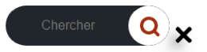Pour ajouter un élément il suffit d'appuyer longtemps sur l’élément et de le glisser vers l’espace de travail pour le positionner.
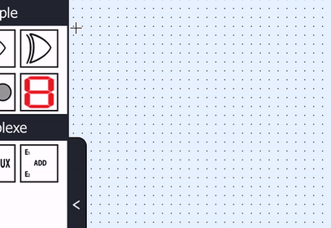La liaison se fait d’une sortie vers une entrée, lorsque vous appuyez sur la sortie, le fil sera lié avec le pointeur de la souris.
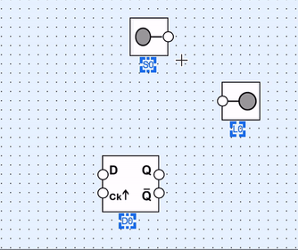Pour ajouter un commentaire il suffit d'appuyer sur l'icône "A" dans la barre d'outils puis cliquer pour positionner la zone du commentaire dans l'espace du travail
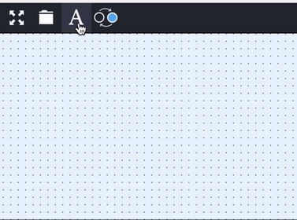Pour Modifier la taille de l'espace de travail, il suffit de clliquer sur le bouton "+" pour l'augmenter ou le bouton "-" pour la diminuer.
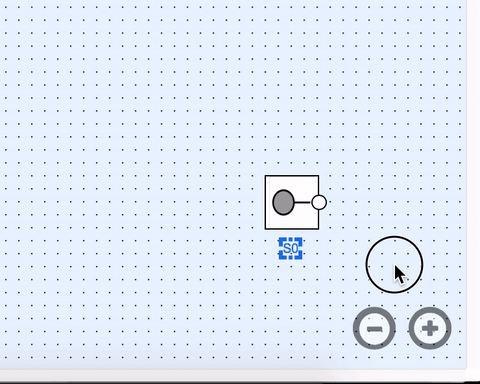Pour Simuler/Arréter la simulation d'un circuit il suffit de cliquer sur le bouton simuler/arreter dans la barre des outils.
Pour déplacer un élément, Appuyer longtemps sur l’élément avec le bouton gauche de la souris et déplacez la souris
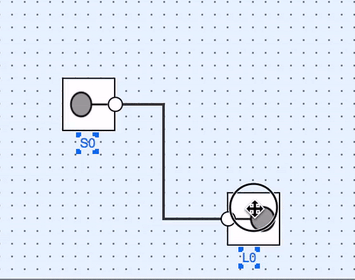Pour déplacer un ensemble d’éléments, sélectionner l'ensemble avec la souris et utiliser les flèches du clavier pour le déplacer.
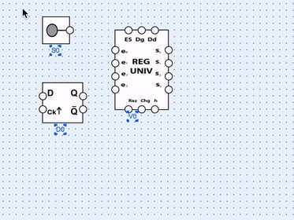Pour déplacer le fil, appuyer longtemps sur le morceau que vous désirez déplacer et bouger le curseur de la souris
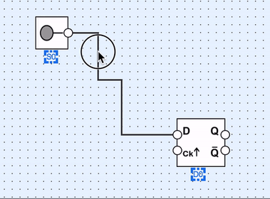Il suffit de appuyer sur la sortie pour selectionner le fil attaché avec elle
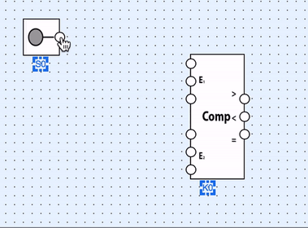Il suffit d'appuyer sur Esc pour Annuler/supprimer un fil selectionné
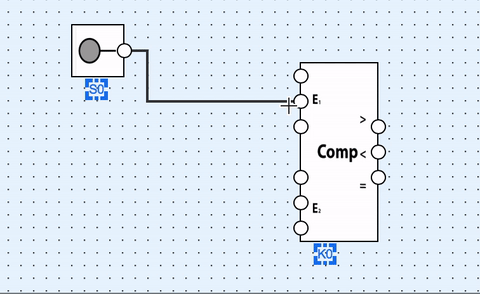Un click droit sur un composant affiche son menu contextuel qui vous propose plein de chose : modifier, copier, coller, supprimer,afficher et cacher l'etiquette du composant.
Pour modifier les propriétés d'un composant, un sous menu spécifique à chaque élément est affiché lors du clic (nombre d’entrées pour une porte logique, modulo pour un compteur, la période de l’horloge …etc).
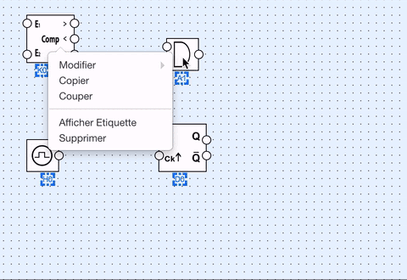Pour Inverser la sortie d'un composant, il suffit de cliquer sur le boutton inverser dans la barre des taches puis choisir l'entrée qui vous convient, ou bien faire un double clic sur cette entrée.
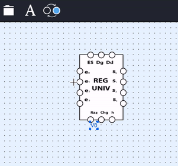Pour Copier et Coller un ensemble d'élements, séléctionner votre ensemble puis : 1 - cliquer sur copier après avoir ouvrir le menu contextuel par le clic droit et puis coller . 2 - utiliser le raccourci du clavier "Ctrl + c" pour copier et "Ctrl + v" pour coller.
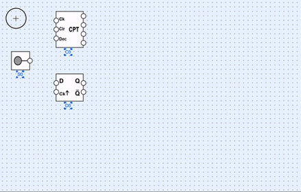
Pour Supprimer un ensemble d'éléments, séléctionner votre ensemble puis :
1- cliquer sur supprimer après avoir ouvrir le menu contextuel par le clic droit.
2- utiliser le raccourci du clavier "backspace".
Elle est schématisée par des icones significatives et contient toutes les fonctionnalitées nécessaires lors de la simulation d’un circuit
Pour Créer un chronogramme d'un composant, cliquer sur l'icône "plus", puis séléctionner la sortie/entree.
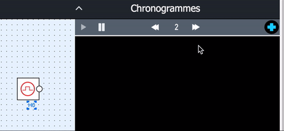Pour Supprimer un chronogramme cliquer sur l'icône "x".
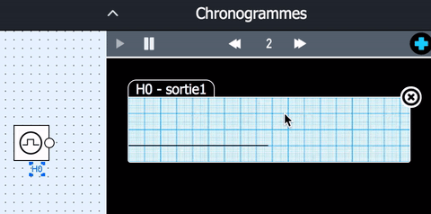Pour Ajuster la vitesse d'affichage du chronogramme cliquer sur les fléshes.
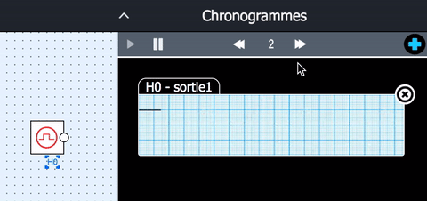